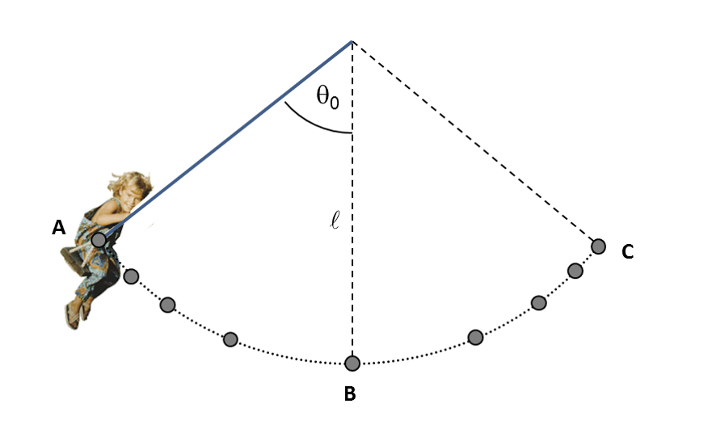

אב הכין בחצר ביתו מתקן של נדנדה עבור בתו הקטנה. הוא קשר למתקן חבל באורך ℓ וחיבר אליו כיסא. הוא מדד שהמסה של בתו יחד עם הכיסא היא m. מסת החבל ניתנת להזנחה.
האב הסיט את הנדנדה בזווית המקסימלית האפשרית בחצר, θ0, ביחס לאנך ושחרר את הנדנדה ממנוחה.
באיור שלפניכם מסומנות בפרקי זמן קבועים נקודות של מיקום כיסא הנדנדה בעת תנועתה.
א.
הסבירו מה ניתן להסיק מתרשים העקבות על גודל מהירות הנדנדה במהלך תנועתה. (4 נק')

בסעיפים הבאים בטאו תשובותיכם באמצעות הפרמטרים m, ℓ, θ0, ו- g, בהתאם לצורך.
ב.
רשמו ביטוי למהירות המרבית של הנדנדה בעת תנועתה. פרטו שיקוליכם. (6 נק')
ג.
שרטטו עבור הנדנדה תרשימי כוחות בנקודות B ו- C המסומנות באיור, ועל סמך תרשימי הכוחות ציינו מה כיוון וקטור התאוצה השקולה של הנדנדה בכל אחת מן הנקודות. הסבירו שיקוליכם. (6 נק')
ד.
בכדי להבטיח את בטיחותה של בתו, בדק האב האם החבל לא ייקרע. לשם כך הוא ביצע ניסוי בעזרת חיישן המורה על מתיחות החבל.
1.
ציינו באיזו נקודה במהלך התנועה יציין החיישן את המתיחות המרבית, ושרטטו תרשים כוחות של הנדנדה בנקודה זו. הסבירו שיקוליכם. (3 נק')
2.
פתחו ביטוי למתיחות המרבית. (7 נק')
ה.
בשלב מסוים, הנדנדה לא הגיעה בתנודה הראשונה עד הנקודה C, אלא עד נקודה C' בה הזווית ביחס לאנך הינה β כך ש- β < θ0. רשמו ביטוי לעבודת כוח התנגדות האוויר על הנדנדה בתנועתה מנקודת השחרור A ל- C'. פרטו שיקוליכם. (7.33 נק')